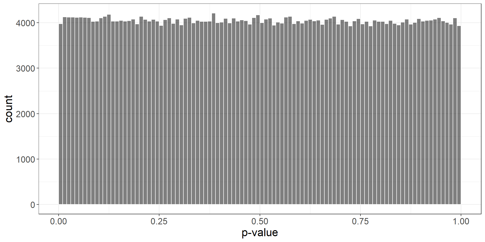
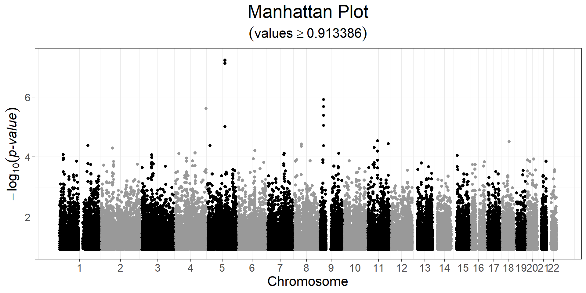

Chapter 5 Genome-Wide Association Study (GWAS)
In {bigstatsr}, you can perform both standard linear and logistic regressions GWAS, using either big_univLinReg() or big_univLogReg().
Function big_univLinReg() should be very fast.
This type of association, where each variable is considered independently, can be performed for any type of FBM (i.e. it does not have to be a genotype matrix). This is why these two functions are in package {bigstatsr}, and not {bigsnpr}.
5.1 Exercise: GWAS
Let us reuse the data prepared in 3.3 and in 4.2.
library(bigsnpr)#> Loading required package: bigstatsrobj.bigsnp <- snp_attach("tmp-data/GWAS_data_sorted_QC.rds")
G <- obj.bigsnp$genotypes
PC <- predict(readRDS("tmp-data/PCA_GWAS_data.rds"))The clinical data includes age, sex, high-density lipoprotein (HDL)-cholesterol (hdl), low-density lipoprotein (LDL)-cholesterol (ldl), triglycerides (tg) and coronary artery disease status (CAD).
For the set of covariates, we will use sex, age, and the first 6 PCs:
covar <- cbind(as.matrix(obj.bigsnp$fam[c("sex", "age")]), PC[, 1:6])Let us perform a case-control GWAS for CAD:
y <- obj.bigsnp$fam$CAD
ind.gwas <- which(!is.na(y) & complete.cases(covar))
gwas <- runonce::save_run(
big_univLogReg(G, y[ind.gwas], ind.train = ind.gwas,
covar.train = covar[ind.gwas, ],
ncores = nb_cores()),
file = "tmp-data/GWAS_CAD.rds")#> user system elapsed
#> 0.14 0.04 135.81This takes two minutes with 4 cores on my laptop. Note that big_univLinReg() takes one second, and should give very similar p-values, if you just need something quick.
You probably should not account for other information such as cholesterol as it is some heritable covariates (Aschard et al. 2015).
plot(gwas)
CHR <- obj.bigsnp$map$chromosome
POS <- obj.bigsnp$map$physical.pos
snp_manhattan(gwas, CHR, POS, npoints = 50e3) +
ggplot2::geom_hline(yintercept = -log10(5e-8), linetype = 2, color = "red") Here, nothing is genome-wide significant because of the small sample size. You can compare peaks with a GWAS for CAD with much larger sample size at https://pheweb.org/UKB-SAIGE/pheno/411.4.
y2 <- obj.bigsnp$fam$hdl
ind.gwas2 <- which(!is.na(y2) & complete.cases(covar))
gwas2 <- big_univLinReg(G, y2[ind.gwas2], ind.train = ind.gwas2,
covar.train = covar[ind.gwas2, ],
ncores = nb_cores())
snp_manhattan(gwas2, CHR, POS, npoints = 50e3) +
ggplot2::geom_hline(yintercept = -log10(5e-8), linetype = 2, color = "red")